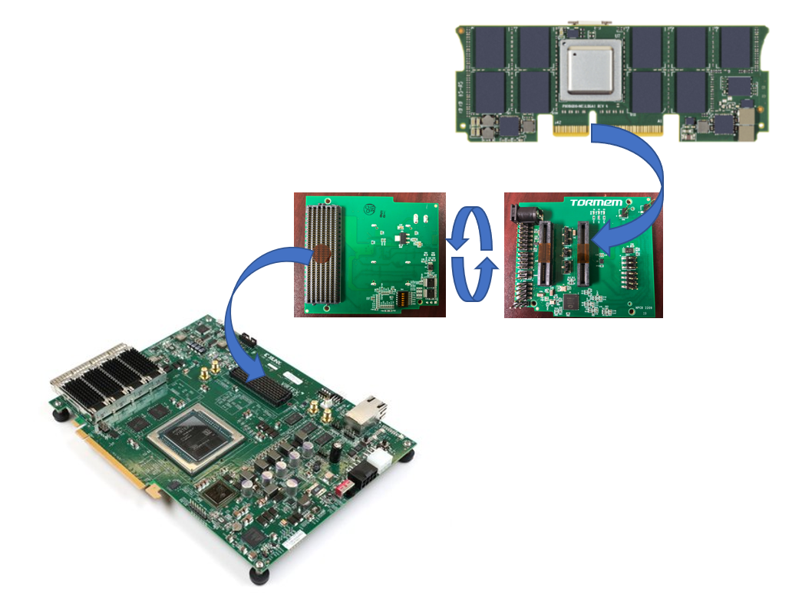

OMI ENABLEMENT Guide
HARDWARE DESCRIPTION
For the purpose of opensourcing the design, a collaboration between OMI members led to a tuning of omi host fpga design "Fire" to be used in a VCU128 Card
With addition of a simple FMC+ connected add-on card, any OMI compatible memory DDIMM module can be evaluated.

The setup allows evaluation of 2 DDIM modules in slots A and B.
Some code is required to synchronise and test the OMI DDIMMs.
Either the code is executed in a companion raspberry pi or any I2C capable computer, or even in an embedded microblaze processor (the latter being under development)
Python source code is available at : Python Code
Python code documentation is available at : Python Documentation
- Checks I2C tree
- Synchronizes DDIMMs
- Executes simple transfers in memory (not published yet)
!!! Note The Raspberry pi can host an Cronus server, should you want to evaluate in a Cronus environment.
REQUIREMENTS
Hardware requirements :
- Get a VCU128 Board
- an adapter board
- at least a DDIMM module
- a usb relay card to ensure automated fire reset / 3.3V / 12V POWER control (will be included in adapter board version 2)
Software requirements :
- obtain a AMD/Xilinx Licence for Vivado. Use 2018.3 version.
ENABLEMENT STEPS
git clone the "no-encrypt_vcu128" branch of Fire design.
First synthetise, implement and generate bitstream of "FIRE" design for vcu128 using the specific branch as specified in the README.md file.
git clone the https://github.com/OpenCAPI/omi_enablement/ and use /python directory with a debugging raspberry pi or any computer with I2C capability to check you can see the design.
Check Python code documentation at : Python Documentation for further experiments.